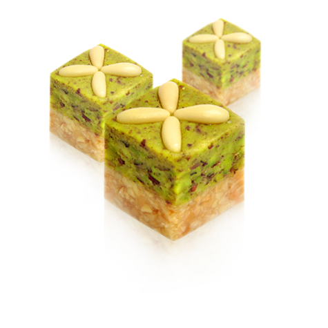

Bjaouia

Ingredients
- 150 g. peeled almonds
- 50 g. hazelnuts
- 25 g. pinions
- 50 g. walnut kernels
- 20 g. pistachios
- 1 C. oil soup
- syrup: 150 g. caster sugar
- 1/2 lemon
- 1 sachet of vanilla sugar
- Decoration: pistachio powder and pine nuts
Preparation steps
- Prepare the dried fruits separately by placing in the oven at 140 ° C, the hazelnuts for about 20 min, the almonds for 15 min, then the walnuts for 5 min.
- Remove the skin from the roasted hazelnuts.
- With a rolling pin, roughly crush the almonds, walnuts, hazelnuts, pistachios and pine nuts.
- Squeeze the lemon half and reserve it for the syrup.
- For the syrup, cook the sugar with 10 cl of water.
- When boiling, add the lemon juice. Check the doneness by plunging the blade of a knife into cold water, take a little sugar, plunge the blade back into the water. Slide your finger over the sugar to obtain a pearl.
- Pour the syrup over the crushed dried fruits and mix with a wooden spatula.
- Lightly oil the work surface and the rolling pin with vegetable oil, place the Bjaouia and flatten it. Repeat the operation on a plate.
- On the baking sheet, cut large strips of Bjaouia then give them the shape of a square.
- Decorate by delicately dipping the surface of the latter in the pistachio powder.
- Add a pinion above.
- Arrange the Bjaouia in a dish.